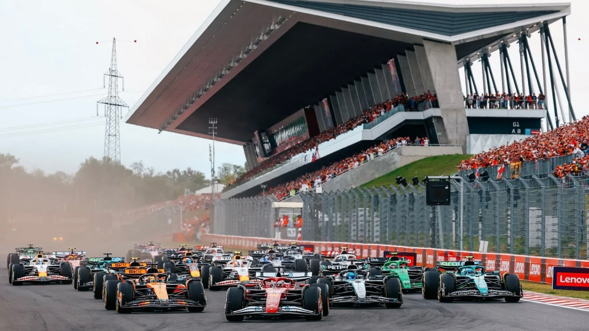

Grande Prémio da Hungria

Hungaroring
Resultados 2025
Pole: Charles Leclerc
Pódio:
🥇 Lando Norris
🥈 Oscar Piastri
🥉 George Russell
Volta mais rápida: George Russell — 1:19.409
Meteorologia: Quente e seco
Ver Resultados